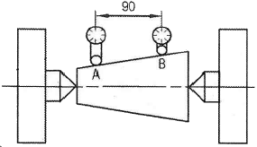
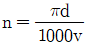
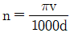
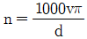
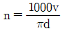
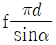
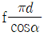

사출(프레스)금형산업기사 (2016-08-21 기출문제)
1과목: 금형설계
1. U-굽힘 가공에서 스프링 백의 방지법으로 틀린 것은?
- 펀치의 측면에 릴리프를 만든다.
- 다이 측면에 구배 클리어런스를 만든다.
- 펀치의 내측에 구배 클리어런스를 만든다.
- 패드 장치를 하여 패드 압력을 적당히 조절한다.
(정답률: 55%)

2. 지름이 60mm인 원통 컵을 지름이 100mm의 블랭크로 1회 드로잉할 때 드로잉률(%)은?
- 40
- 60
- 70
- 80
(정답률: 83%)
3. 드로잉 가공을 하였더니 전 둘레에 걸쳐서 바닥이 빠졌다. 그 결함과 가장 거리가 먼 것은?
- 클리어런스가 너무 크다.
- 드로잉 속도가 너무 빠르다.
- 판 누르개 압력이 너무 세다.
- 펀치 및 다이의 모서리가 예리하다.
(정답률: 60%)
4. 블랭크로 원통형 용기를 가공할 때 소요되는 드로잉력(P)을 구하는 식으로 옳은 것은? (단, d=펀치 직경, D=블랭크 직경, δb=가공 재료의 두께, k=보정계수이다.)
- P=π×d×t×δb×k
- P=π×D×t×δb×k
- P=π×(D/d)×tδb×k
- P=π×(d/D)×t×δb×k
(정답률: 61%)
5. 소재 이송장치 중 가장 일반적인 방식이며 소재의 재질이나 표면의 상태에 제한이 없고, 코일재와 프로그레시브 금형을 사용하여 고능률로 자동가공 할 때 사용하는 것은?
- 롤 피더
- 푸셔 피더
- 다이얼 피더
- 산업용 로봇
(정답률: 74%)
6. 다음 중 전단과정의 순서가 옳은 것은?
- 전단기→소성변형기→파단기
- 파단기→전단기→소성변형기
- 소성변형기→전단기→파단기
- 소성변형기→파단기→전단기
(정답률: 71%)
7. 프로그레시브 금형에서 소재의 정확한 가공위치를 결정하는 기능을 갖고 있는 핀은?
- 가이드 핀
- 리프터 핀
- 파일럿 핀
- 로케이트 핀
(정답률: 76%)
8. 프레스 금형의 구성요소 중 키커 핀(Kicker Pin)의 주된 기능을 설명한 것으로 옳은 것은?
- 부품과 부품의 위치를 정확하게 잡아준다.
- 상형과 하형의 위치를 정확하게 잡아준다.
- 다이 속의 제품 추출을 도와주는 기능을 한다.
- 제품이나 스크랩(scrap)이 펀치(punch)의 밑면에 부착되는 것을 방지한다.
(정답률: 70%)
9. 전단가공의 종류가 아닌 것은?
- 노칭가공
- 절단가공
- 펀칭가공
- 드로잉가공
(정답률: 74%)
10. 금형의 설계, 제작이 완료되면 금형에 의한 시험 작업을 하면서 금형의 수정을 용이하게 하기 위한 전용의 시험 작업용 프레스는?
- OBI 프레스
- 트랜스퍼 프레스
- 프레스 브레이크
- 다이 스포팅 프레스
(정답률: 58%)
11. 사출금형에서 냉각 구멍을 설계할 때 유의사항으로 틀린 것은?
- 냉각 구멍의 위치는 이젝터 핀의 위치보다 우선한다.
- 고정측 형판과 가동측 형판은 각각 독립해서 조정한다.
- 수축률이 큰 수지의 경우 수축방향과 직각으로 냉각구멍을 설치한다.
- 큰 냉각 구멍보다는 작고 많은 수의 냉각 구멍을 설치하는 것이 효과적이다.
(정답률: 59%)
12. 러너리스 시스템 중 핫 러너(hot runner)방식의 특징으로 틀린 것은?
- 성형 사이클이 단축된다.
- 러너에 의한 수지 손실이 없다.
- 구조가 복잡하게 되고, 고가이다.
- 노즐의 열이 금형에 전달되기 쉽다.
(정답률: 50%)
13. 스프루 록 핀의 역할에 대하여 설명한 것 중 옳은 것은?
- 금형이 닫힐 때, 캐비티와 코어의 편심방지 역할
- 금형이 열릴 때, 성형품을 캐비티 코어에서 뽑아내는 역할
- 금형이 닫힐 때, 고정측 형판과 가동측 형판의 안내 역할
- 금형이 열릴 때, 스프루 부시에서 스프루를 뽑아내는 역할
(정답률: 73%)
14. 다음 중 중앙에 긴 구멍이 뚫려 있는 부시모양의 성형품, 구멍이 뚫려있는 보스, 둥근 원통모양의 성형품 등을 금형으로부터 밀어내는데 적합한 이젝터는?
- 에어 이젝터
- 슬리브 이젝터
- 접시핀 이젝터
- 스트리퍼 플레이트 이젝터
(정답률: 63%)
15. 사출 성형품의 변형방지를 위한 대책이 아닌 것은?
- 축벽구배
- 모서리 라운딩
- 보스 주위 리브설치
- 테두리의 살 붙이기
(정답률: 57%)
16. 사출성형기에서 형체 실린더의 유압이 40kgf/cm2이고 실린더 직경이 100mm라면 형체력(ton)은 약 얼마인가?
- 3.14
- 4.14
- 31.4
- 41.4
(정답률: 54%)
17. 다음 중 결정성 수지가 아닌 것은? (문제 오류로 실제 시험에서는 2, 4번이 정답처리 되었습니다. 여기서는 2번을 누르면 정답 처리 됩니다.)
- PA
- PC
- PP
- PS
(정답률: 77%)
18. 러너 형판에 러너를 가열할 수 있는 시스템을 내장시켜 러너 내의 수지를 일정한 용융상태로 유지시키는 방법으로 러너리스 성형에서 가장 확실하고 형상이나 사용 수지의 제한이 적은 방식은?
- 핫 러너 방식
- 웰 타입 노즐방식
- 익스텐션 노즐방식
- 인슐레이티드 러너방식
(정답률: 72%)
19. 이젝터 스트로크가 30mm이고, 경사가 30°인 경사 이젝터 핀에 직각이 되도록 한 이젝터 플레이트 위를 슬라이딩 할 경우, 가로 방향의 움직임은 약 몇 mm인가?
- 17.32mm
- 15.29mm
- 13.54mm
- 12.52mm
(정답률: 34%)
20. 러너의 치수 및 형상을 결정할 때 고려사항으로 틀린 것은?
- 러너의 길이는 가급적 짧게 한다.
- 러너 단면형상은 사다리꼴 형태가 가장 좋다.
- 러너의 굵기는 성형품의 살 두께보다 굵게 한다.
- 금형을 제작할 때 표준 커터를 사용할 수 있는 크기로 선정한다.
(정답률: 68%)
2과목: 기계가공법 및 안전관리
21. 높은 정밀도를 요구하는 가공물, 각종 지그, 정밀기계의 구멍가공 등에 사용하는 보링머신으로, 온도 변화에 따른 영향을 받지 않도록 항온ㆍ항습실에 설치해야 하는 것은?
- 수직보링머신
- 수평보링머신
- 지그보링머신
- 코어보링머신
(정답률: 71%)
22. 일반적으로 밀링머신의 크기를 구분하는 기준으로 옳은 것은?
- 모터의 마력
- 주축의 두께
- 밀링 머신의 높이
- 테이블의 이송거리
(정답률: 73%)
23. 공차의 설명으로 옳은 것은?
- 최대 허용치수에서 기준치수를 뺀 값
- 최소 허용치수에서 기준치수를 뺀 값
- 최대 허용치수와 최소 허용치수와의 차
- 구멍의 치수가 축의 치수보다 클 때 생기는 치수차
(정답률: 73%)
24. 산화알루미늄 분말을 주성분으로 마그네슘, 규소 등의 산화물과 소량의 다른 원소를 첨가하여 소결한 것으로 고온에서 경도가 높고 내마모성이 좋아 빠른 절삭속도로 절삭이 가능한 절삭공구 재질은?
- 서멧
- 세라믹
- 합금공구강
- 주조 경질합금
(정답률: 64%)
25. 기계작업에서 고속 연삭기, 고속 드릴, 고속 베어링 등의 급유 방법에서 압축공기를 이용하는 급유법은?
- 오일링(oiling) 급유법
- 분무(oil mist) 급유법
- 패드(pad oiling) 급유법
- 강제 급유법(circulating oiling)
(정답률: 57%)
26. 테이퍼 1/30 검사를 할 때 A에서 B까지의 다이얼 게이지를 이동시키면 다이얼 게이지의 차이는 몇 mm인가?

- 1.5
- 2
- 2.5
- 3.5
(정답률: 49%)
27. 보링 작업에는 여러 가지 절삭 공구가 사용된다. 다음 중 보링 작업에서 내면 다듬질 가공으로 가장 많이 사용하는 공구는?
- 탭
- 드릴
- 바이트
- 밀링커터
(정답률: 58%)
28. 니이형 밀링머신의 종류만 나열되어 있는 것은?
- 만능밀링머신, 수직밀링머신, 수평밀링머신
- 만능밀링머신, 모방밀링머신, 수직밀링머신
- 모방밀링머신, 수평밀링머신, 수직밀링머신
- 수직밀링머신, 수평밀링머신, 플레이너형 밀링머신
(정답률: 66%)
29. 선반 가공에서 공작물과의 마찰을 방지하기 위하여 주어지는 바이트의 각도는?
- 전방각
- 측면 여유각
- 후방 여유각
- 노즈(nose) 반경
(정답률: 67%)
30. 선반작업을 할 때 절삭속도를 v(m/min), 원주율을 π, 일감의 지름을 d(mm) 라고 할 때 회전수를 n(rpm)을 구하는 식은?




(정답률: 67%)
31. 주축의 회전운동을 직선 왕복운동으로 변화시키고 바이트를 사용하여 가공물의 안지름에 키 홈, 스플라인, 세레이션 등을 가공할 수 있는 밀링 부속장치는?
- 회전 테이블
- 슬로팅 장치
- 수직 밀링 장치
- 래크 절삭 장치
(정답률: 63%)
32. 센터리스 연삭기의 통과 이송법에서 조정숫돌바퀴 1회전으로 일감이 이송되는 길이 f(mm)를 구하는 식으로 옳은 것은? (단, d:조정숫돌 바퀴의 지름(mm), a:조정숫돌 바퀴의 경사각(도)이다.)
- f=πdsinα
- f=πdcosα


(정답률: 49%)
33. 수나사의 정밀 측정 대상은?
- 길이
- 리드 각
- 산의 높이
- 유효 지름
(정답률: 70%)
34. 금긋기 작업을 할 때 유의사항으로 틀린 것은?
- 선은 가늘고 선명하게 한 번에 그어야 한다.
- 금긋기 선을 여러 번 그어 혼동이 일어나지 않도록 한다.
- 기준면과 기준선을 설정하고 금긋기 순서를 결정하여야 한다.
- 짙은 치수의 금긋기 선은 전후, 좌우를 구분하지 말고 한 번에 긋는다.
(정답률: 65%)
35. 기어의 절삭방법으로 적합하지 않은 것은?
- 창성에 의한 절삭법
- 형판에 의한 절삭법
- 총형공구에 의한 절삭법
- 센터리스 연삭에 의한 절삭법
(정답률: 58%)
36. 액체호닝의 장점으로 틀린 것은?
- 가공시간이 짧다.
- 형상이 복잡한 것도 쉽게 가공한다.
- 가공물의 피로강도를 50%이상 향상시킨다.
- 가공물의 표면에 산화막이나 거스러미를 제거하기 쉽다.
(정답률: 57%)
37. 연삭숫돌 결합제의 구비조건에 관한 설명 중 틀린 것은?
- 입자 간에 기공이 생겨야 한다.
- 고속회전에서도 파손되지 않아야 한다.
- 연삭열과 연삭액에 대해 안정성이 있어야 한다.
- 입자가 탈락되지 않도록 접합성이 강해야 한다.
(정답률: 54%)
38. 지름 12mm의 고속도강 드릴로 연강에 구멍을 뚫을 때 스핀들의 회전수(rpm)은? (단, 절삭속도는 32mm/min이다.)
- 119
- 318
- 425
- 849
(정답률: 51%)
39. CNC 프로그램에서 일시 정지 기능인 G04 다음에 사용될 수 없는 어드레스는?
- P
- S
- U
- X
(정답률: 65%)
40. 쇠톱의 절단 가공 방법에 대한 설명 중 틀린 것은?
- 절단이 끝날 무렵에는 힘을 빼고, 가볍게 절삭도록 한다.
- 톱날의 절삭각 또는 보통 수평으로 하나 절단하는 재료에 따라 다르다.
- 쇠톱의 절단 작업은 밀 때에는 힘을 빼고 가볍게 전진시키며, 당길 때는 힘을 주어 절단한다.
- 연강과 황동 등을 절단하는 것은 날이 거칠고, 잇수가 적은 것을 주로 사용한다.
(정답률: 62%)
3과목: 금형재료 및 정밀계측
41. 다음 중 마이크로미터를 교정하고자 할 때 필요하지 않은 것은?
- 옵티컬 플랫
- 옵티컬 패럴렐
- 게이지 블록
- 블록
(정답률: 56%)
42. 다음 중 실린더 게이지와 같은 내경 측정용 측정기의 0점 조정용으로 사용되는 것은?
- 에어 스위치 게이지(air switch gauge)
- 텔레스코핑 게이지(telescoping gauge)
- 마스터 링 게이지(master ring gauge)
- 스몰 홀 게이지(small hole gauge)
(정답률: 47%)
43. 광학식 측정기에서 사용하는 것으로 집광렌즈의 초점 위치에 점광원을 두어 배율오차가 생기지 않도록 하는 조명방법을 이용한 광학계는?
- 텔레센트릭(Telecentric) 광학계
- 로벌버(Rovolver) 광학계
- 줌(Zoom) 광학계
- 수직 반사식(Vertical reflect) 광학계
(정답률: 56%)
44. 다음 중 수나사의 유효지름을 측정할 수 없는 측정기는?
- 투영기
- 나사 마이크로미터
- 공구 현미경
- 깊이 마이크로미터
(정답률: 60%)
45. 측정의 오차와 관련하여 정확도(accuracy)와 정밀도(precision)가 중요하게 고려되어야 하는데 여기서 정확도를 가장 옳게 설명한 것은?
- 정확도는 참값에 비해 한쪽으로 치우침이 작은 정도를 의미하며 주로 계통적 오차에 의해 발생한다.
- 정확도는 참값에 비해 한쪽으로 치우침이 작은 정도를 의미하며 주로 우연적 오차에 의해 발생한다.
- 정확도는 측정값의 흩어짐이 작은 정도를 의미하며 주로 계통적 오차에 의해 발생한다.
- 정확도는 측정값의 흩어짐이 작은 정도를 의미하여 주로 우연적 오차에 의해 발생한다.
(정답률: 54%)
46. 고정 나이프 에지와 스핀들 상단의 나이프 에지를 이용하여 나타난 레버비에 따라 확대율을 높여서 측정하는 컴퍼레이터는?
- 다이얼게이지
- 미니미터
- 오르도테스트
- 미크로케이터
(정답률: 57%)
47. 다음 측정값에서 유효숫자의 자리수가 틀린 것은?
- “0.022"의 유효숫자 자리수는 4
- “28.76”의 유효숫자 자리수는 4
- “4.50"의 유효숫자 자리수는 3
- “45000“의 유효숫자 자리수는 5
(정답률: 51%)
48. 공구현미경을 이용하여 2개의 작은 구멍 중심사이 거리를 측정할 때 가장 편리하게 사용하는 부속품은?
- 센터 지지대
- 형판 접안렌즈
- 각도 접안렌즈
- 이중상 접안경
(정답률: 52%)
49. 최대측정범위가 150mm이고 종합 오차가 ±5μm인 외측 마이크로미터를 허용오차가 ±3μm인 기준봉을 사용하여 0점 조정하였다면 영점조정 시 발생할 수 있는 최대 오차는? (단, 여기서는 오차의 전파법칙(law of propagation of errors)을 적용한다.)
- ±1.8μm
- ±4.1μm
- ±5.8μm
- ±7.8μm
(정답률: 36%)
50. 눈금 간격이 2mm, 감도가 1'(분)인 수준기(level) 기포관의 곡률 반지름은?
- 약 4875.5mm
- 약 6875.5mm
- 약 21253mm
- 약 45253mm
(정답률: 47%)
51. 블랭킹 금형의 생크 재질로 가장 적합한 것은?
- STS3
- STC4
- SKH2
- SM45C
(정답률: 62%)
52. 백주철(white cast iron)을 열처리로 넣어 가열해서 탈탄 또는 Fe3C를 가열분해하여 흑연을 입상으로 제조한 주철은?
- 회주철
- 가단주철
- 구상흑연주철
- 미하나이트주철
(정답률: 42%)
53. 순수한 철(Fe)을 용융상태에서 냉각시킬 때 나타나는 결정구조의 변화 순서로 옳은 것은? (단, L은 융액(liquid)이다.)
- L→BCC→BCC→FCC
- L→BCC→FCC→BCC
- L→FCC→BCC→FCC
- L→FCC→FCC→BCC
(정답률: 61%)
54. 레데뷰라이트 조직으로 옳은 것은?
- α고용체
- γ고용체
- α고용체와 Fe3C의 혼합물
- γ고용체와 Fe3C의 혼합물
(정답률: 50%)
55. 플라스틱 재료의 특성으로 틀린 것은?
- 열에 약하다.
- 가볍고 강하다.
- 성형성이 불량하다.
- 표면의 경도가 약하다.
(정답률: 69%)
56. 순철에 나타나는 변태가 아닌 것은?
- A1
- A2
- A3
- A4
(정답률: 57%)
57. Al-Si계의 대표적인 합금은?
- 라우탈
- 실루민
- 알코아
- 도우메탈
(정답률: 66%)
58. 다음의 조직 중 열처리 과정에서 용적 변화가 가장 큰 것은?
- 펄라이트
- 베이나이트
- 마텐자이트
- 오스테나이트
(정답률: 48%)
59. 열처리 방법과 그 설명이 옳은 것은?
- 템퍼링(tempering):담금질한 것에 취성을 부여하는 작업이다.
- 어닐링(annealing):재질을 강하게 하고 균일하게 하는 작업이다.
- 퀜칭(quenching):서냉시켜 재질에 인성을 부여하는 작업이다.
- 노멀라이징(normalizing):공냉하여 재료를 표준화 시키는 작업이다.
(정답률: 57%)
60. 형상기억합금에 관한 설명 중 틀린 것은?
- 형상기억효과는 일방향성의 현상이다.
- 형상기억합금의 대표적인 합금은 Ni-Ti합금이다.
- 형상기억효과를 나타내는 합금은 반드시 오스테나이트 변태를 한다.
- 소성변형된 것이 특정 온도 이상으로 가열하면 변형되기 이전의 원래 상태로 돌아가는 합금이다.
(정답률: 57%)